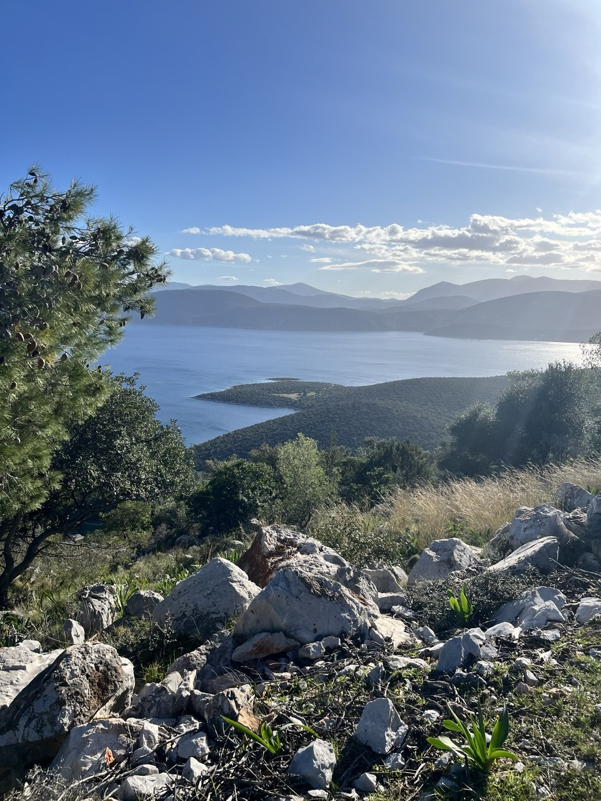

Дарья Зиборова
Культуролог, PhD в области философии, член Международной ассоциации египтологов (IAE), доцент ХНУ им. В. Н. Каразина.
Автор курсов «Инициации и Путь Героя», «Миф и нарратив», «Теология Древнего Египта», «Семиотика культуры».
Ретрит-лаборатория
12–19 декабря 2026 года
Ксилокастро · Пелопоннес · Греция

Когда мир шумит, а суета и тревога поглощают, так важно найти место, где можно «выдохнуть», восстановиться и расслышать себя.
Мы нашли его среди скал и оливковых рощ древней Эллады, на самом берегу моря, в маленьком уютном отеле у старого парка.
Пелопоннес — место, где оживают мифы: в шуме моря, в древних руинах, хранящих удивительные истории, в покое горных монастырей.
Ретрит-лаборатория «Олива и Персефона» посвящена душе — ее странствиям, возрождению и «воспоминанию себя».
Мы будем погружаться в древнегреческие мифы и философские аллегории Платона, путешествовать по местам, где история и миф становятся почти осязаемыми.
Побываем в Элевсине, хранящем тайны древних мистерий, и Эпидавре, где искали исцеления души и тела. Отправимся собирать оливки, посетим Коринф, где встретились античная трагедия и христианская проповедь о Любви.
Будем наслаждаться морем, прогулками, вином и вкусной едой. А вечерами — открывать тексты Платона и древние мифы, в которых через образы и архетипы разворачивается удивительная история странствий души на пути к самой себе.
Дарья Зиборова
Культуролог, PhD в области философии, член Международной ассоциации египтологов (IAE), доцент ХНУ им. В. Н. Каразина.
Автор курсов «Инициации и Путь Героя», «Миф и нарратив», «Теология Древнего Египта», «Семиотика культуры».
Таня Апет
Психолог, магистр психологии Манчестерского университета (MA in Psychology).
Специалист по телесно-ориентированным практикам и ландшафтной аналитике, фасилитатор практики Walk & Talk, проводник терапевтических путешествий.
12 декабря · День 1
Порог Гестии
Сбор круга, тепло встречи и настройка исследовательской оптики.
13 декабря · День 2
Тайна Персефоны
Элевсин и Лутраки · Путешествие на целый день
14 декабря · День 3
Богиня Гигея
Эпидавр и Нафплион · Путешествие на целый день
15 декабря · День 4
Перекресток Миров
Древний и современный Коринф · Путешествие на целый день
16 декабря · День 5
Дары Оливы
Сбор оливок в монастырской роще
17 декабря · День 6
Пробуждение Зоэ
Embodiment-практикум с Таней Апет
18 декабря · День 7
Дар Мнемосины
Осмысление и интеграция
19 декабря · День 8
Благословение Ностоса
Путь домой и возвращение в мир.
1 200 EUR на человека при двухместном размещении (DBL)
Одноместное размещение (SGL): доплата 330 EUR за 7 ночей.
Бронирование без предоплаты. Мы фиксируем ваше место в группе после предоставления авиабилета до Афин.
Камерный формат: группа до 10 человек — пространство для живого общения и внимания к каждому участнику.
Программа лаборатории
Путешествия и экскурсии
Проживание
7 ночей в уютном отеле у моря в Ксилокастро, двухместное размещение.
Встреча и проводы
Время встречи и отъезда согласуем с учетом расписания ваших рейсов и поездов. Подготовим подробную инструкцию, как добраться из аэропорта Афин до Киато на пригородной электричке с одной пересадкой, и поможем разобраться с расписанием и покупкой билетов.
Питание
Мы рядом. На протяжении лаборатории мы берем на себя организационные вопросы, логистику поездок и сопровождение участников.
После подтверждения участия вы получите подробный гайд: как добраться до места встречи, что взять с собой, какую погоду ожидать в декабре и как подготовиться к практикам.
Мы также будем на связи во время вашего пути в Грецию.
Если вы чувствуете отклик на это путешествие — дайте нам знать. Мы будем рады видеть вас в нашем кругу.
Написать организаторам в TelegramИли написать по электронной почте.
«Анатомия выбора» · Основной сайт проекта